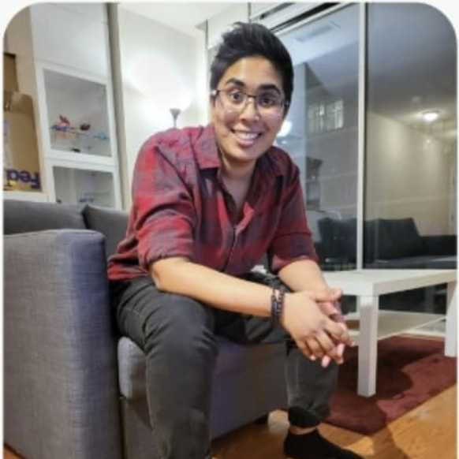
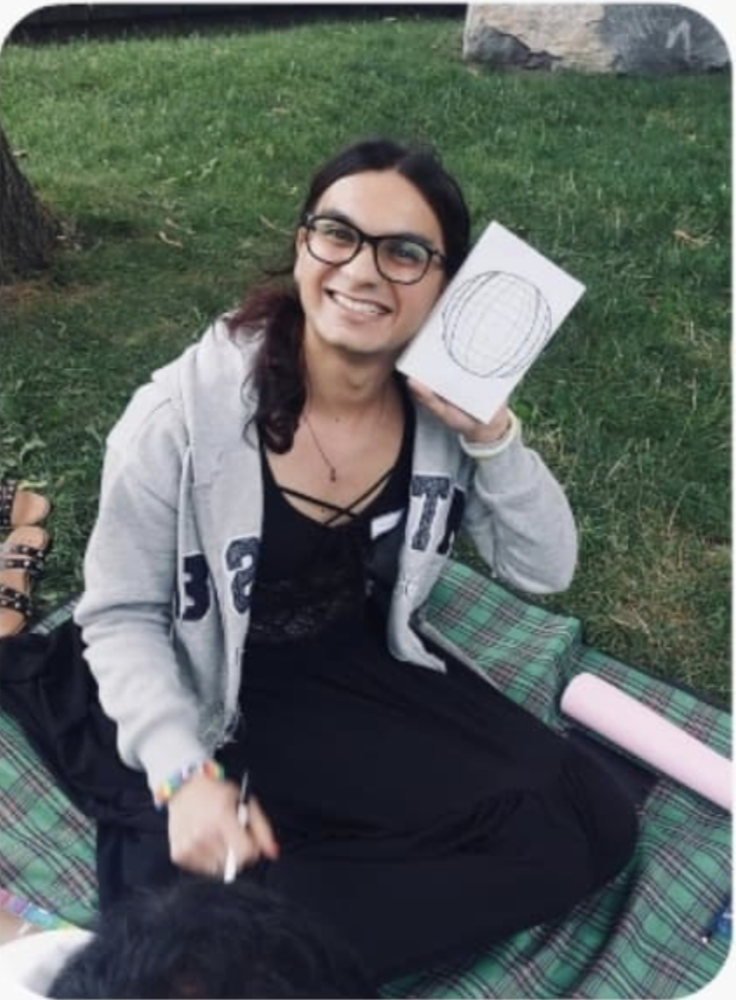
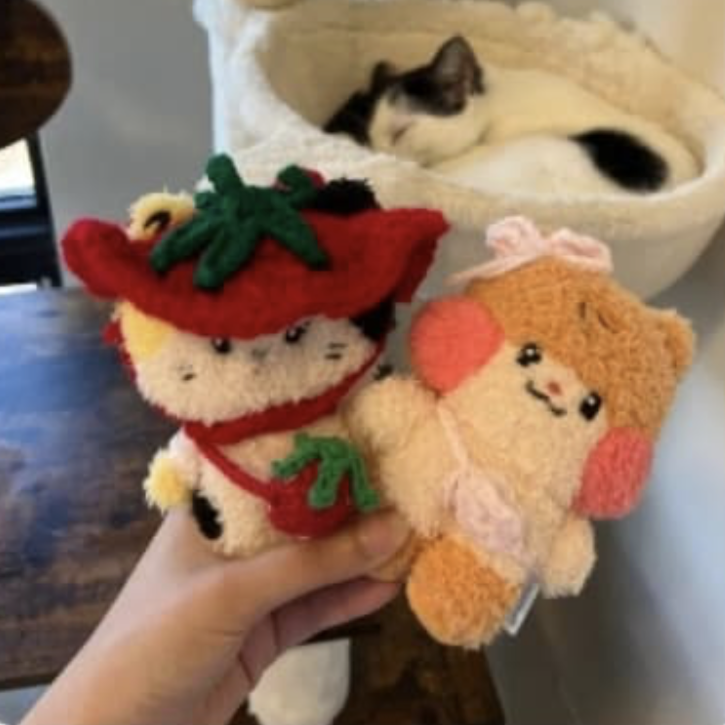
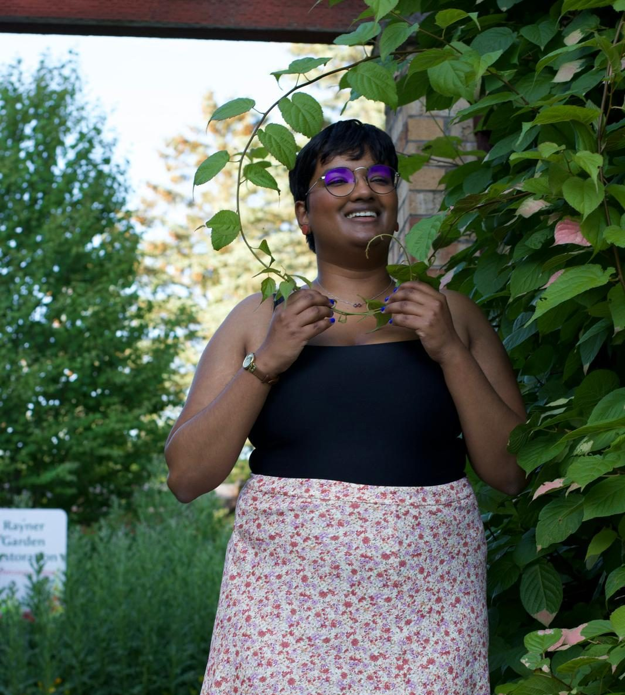

Meet the QSA Team!
Arshi Syed (He/Him) - Founder and Executive Director

Hello community! I'm Arshi, I am the Founder and Executive Director of
Queer South Asians.
As a 19yr old immigrant youth who had left home to escape violence after coming out to family, getting to meet queer south asian folks and engaging in story sharing was what kept me alive. I know how isolating it can be, especially for immigrant south asian queer folks to find the magical and elusive chosen family that queers are always told we will have. We get told "it gets better" in our darkest hours but what I believe in is that we can make it better for ourselves by taking active interest in community building. There are life changing roles we can each have by simply showing up and caring about each other's journeys. We are never alone in our struggles and we can empower a loving and thriving LGBTQ South Asian community together by sharing our skills, resources and lived experiences.
As a 19yr old immigrant youth who had left home to escape violence after coming out to family, getting to meet queer south asian folks and engaging in story sharing was what kept me alive. I know how isolating it can be, especially for immigrant south asian queer folks to find the magical and elusive chosen family that queers are always told we will have. We get told "it gets better" in our darkest hours but what I believe in is that we can make it better for ourselves by taking active interest in community building. There are life changing roles we can each have by simply showing up and caring about each other's journeys. We are never alone in our struggles and we can empower a loving and thriving LGBTQ South Asian community together by sharing our skills, resources and lived experiences.

Aarya Roy (She/Her) - Director of Operations
Hello community! I'm Aarya, I am the Director of Operations of Queer
South Asians.
As a new immigrant in Montreal, I often found myself feeling isolated and out of place in spaces that weren't catered to racialized communities. Eventually, I got tired of searching for those spaces and gave up on trying to build community there. When I moved to Toronto, I realized that if I couldn't find these spaces, I would create them or work with folks who do. And thus began my journey with QSA.
I wish to continue creating more events that bring joy and belonging to the Queer South Asian community in Toronto.
As a new immigrant in Montreal, I often found myself feeling isolated and out of place in spaces that weren't catered to racialized communities. Eventually, I got tired of searching for those spaces and gave up on trying to build community there. When I moved to Toronto, I realized that if I couldn't find these spaces, I would create them or work with folks who do. And thus began my journey with QSA.
I wish to continue creating more events that bring joy and belonging to the Queer South Asian community in Toronto.
Aman Gilani (She/Her) - Web Coordinator

Hello community! I'm Aman, I am the Web Coordinator of Queer South
Asians.
I discovered the QSA's instagram page when i was randomly browsing through the reels one night. I saw that they were looking for some volunteers for the annual community dinner and being a big introvert i decided to be bold and apply for it. Ever since I have loved and had a lot of fun spending time with the folks at QSA and continued volunteering for more events.
My favorite event so far has to be the community dinner, mainly because it was my first time being socially out as a trans person around new people and i was very proud of myself for that.
I think QSA does a wonderful job of creating a supportive and welcoming environment for the LGBTQ south asian community. Moving forward i wish we continue with the same with increasing passion and provide a place for everyone to feel safe, have fun and be comfortable just being themselves.
I discovered the QSA's instagram page when i was randomly browsing through the reels one night. I saw that they were looking for some volunteers for the annual community dinner and being a big introvert i decided to be bold and apply for it. Ever since I have loved and had a lot of fun spending time with the folks at QSA and continued volunteering for more events.
My favorite event so far has to be the community dinner, mainly because it was my first time being socially out as a trans person around new people and i was very proud of myself for that.
I think QSA does a wonderful job of creating a supportive and welcoming environment for the LGBTQ south asian community. Moving forward i wish we continue with the same with increasing passion and provide a place for everyone to feel safe, have fun and be comfortable just being themselves.

Saf (She/They) - Social Media Coordinator
Hello community! I'm Saf, I am the Social Media Coordinator of Queer
South Asians.
Saw a post about the QSA Community Dinner taking place and call for volunteers, decided to apply. Pure chance that it became more than a one time thing, but l love volunteering with QSA!
I aim to create a warm and welcoming community for all queer south asian folks so QSA can become a home away from home for them.
Saw a post about the QSA Community Dinner taking place and call for volunteers, decided to apply. Pure chance that it became more than a one time thing, but l love volunteering with QSA!
I aim to create a warm and welcoming community for all queer south asian folks so QSA can become a home away from home for them.
Luxmy (They/Them) - Peer Support Coordinator

Hello community! I'm Luxmy, I am the Peer Support Coordinator and
Facilitator for Queer South Asians.
I am an agender, queer, chronically ill, Tamil person. I joined QSA in 2024 as a peer listening volunteer, and now I am the Peer Support Coordinator and Facilitator.
I enjoy listening and creating space for people who need the support. In my spare time, I love to crochet, read, meet new people, and build community through QSA events.
I am an agender, queer, chronically ill, Tamil person. I joined QSA in 2024 as a peer listening volunteer, and now I am the Peer Support Coordinator and Facilitator.
I enjoy listening and creating space for people who need the support. In my spare time, I love to crochet, read, meet new people, and build community through QSA events.